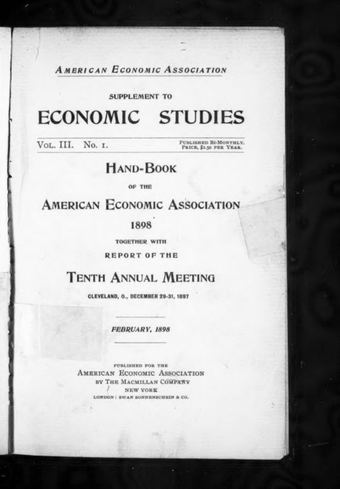

Manual de 1898 e a reunião de Cleveland: gás, tarifas e moeda
Leitura: 6 min
O suplemento de 1898 traz o manual da associação e os resumos da reunião de Cleveland: serviços municipais de gás e água, tarifas e impostos, ensino de economia, tributação em Massachusetts e reforma da moeda.


Na manhã de quarta-feira, 29 de dezembro de 1897, em Cleveland, a American Economic Association abriu sua décima reunião anual sem o presidente, Henry C. Adams, e sem o secretário do Tesouro, Gage, retido em Washington por obrigações do cargo. Coube ao primeiro vice-presidente, Franklin H. Giddings, de Columbia, dar as boas-vindas. Ele lembrou o primeiro presidente da associação, Francis A. Walker, morto naquele ano, e disse que a economia política voltava a dar atenção aos negócios práticos, depois de anos dedicados à utilidade, ao custo e ao valor subjetivos.
A reunião foi até 31 de dezembro, ao lado da American Historical Association, com duas sessões conjuntas. O suplemento ao nº 1 do terceiro volume dos Economic Studies, de fevereiro de 1898, reúne o manual da associação de 1898 e o relatório da reunião, com o programa, as decisões do Conselho, as contas e os resumos de trabalhos e debates.
Como estava a associação?
A introdução do manual descreve uma associação formada sobretudo por professores de economia, com empresários, jornalistas, advogados e políticos, e cerca de cem assinantes, quase todos bibliotecas. Dirigentes e autores não eram pagos, e toda a receita ia para publicações e reuniões. Arthur T. Hadley, de Yale, foi eleito presidente.
O relatório do secretário, Walter F. Willcox, registra a transferência do estoque de publicações para a Macmillan, avaliado em US$ 16 mil, e a queda de cerca de US$ 300 nas vendas e assinaturas. O Conselho criou comissões especiais sobre a reforma da moeda, o décimo segundo censo e o ensino de história econômica.
O que se discutiu em Cleveland?
O programa, que Giddings chamou de eminentemente prático, teve seis sessões. Na primeira, Carroll D. Wright, comissário do Trabalho, apresentou o levantamento dos escritórios de estatística do trabalho sobre a distribuição municipal e privada de água, gás e eletricidade, e Elroy M. Avery e John H. Gray duvidaram de que as empresas abrissem seus livros. Hadley comparou tarifas de serviços públicos e impostos, com réplicas de Rosewater, Newcomb, Taussig e Carver. Seguiram-se dois debates sobre ensino, um sobre o lugar da história econômica e outro sobre métodos de aula, e um trabalho de F. W. Taussig sobre o inquérito da tributação em Massachusetts. A última manhã tratou do plano de reforma da moeda do secretário Gage.
Duas preocupações atravessam as sessões: a falta de dados e a fronteira entre o público e o privado. Gray sustentou que não havia estatísticas para decidir entre gás municipal e privado; Hadley propôs ver os grandes monopólios como funções públicas delegadas à gestão privada e encerrou seu debate com uma frase sobre a impossibilidade de medir o custo de um serviço ferroviário.
“Deus Todo-Poderoso não sabe quanto custa transportar um vagão de pregos de Chicago a São Francisco.” (God Almighty does not know how much it costs to haul a car load of nails from Chicago to San Francisco.)
Na sessão sobre a moeda, Taussig expôs o plano de Gage e duvidou de que os bancos aproveitassem as novas condições de emissão; Horace White defendeu notas lastreadas nos ativos dos bancos, com fundo de garantia, como no Canadá; A. J. Warner chamou a moeda elástica de ilusão; R. M. Breckenridge mostrou a diferença de juros entre as cidades e defendeu agências bancárias.
O que mais há na edição?
O manual reproduz o estatuto, que proíbe a associação de tomar posição partidária, e o regimento, com nove comitês permanentes, além das listas de ex-presidentes, do Conselho por ano de término do mandato, dos quinze sócios honorários estrangeiros, de Alfred Marshall a Léon Walras, e de todos os sócios e assinantes. O resumo das contas do tesoureiro, Charles H. Hull, cobre o ano encerrado em 23 de dezembro de 1897 e foi conferido por G. K. Holmes e J. W. Crook.
Na minha leitura
Na minha leitura, a reunião de Cleveland gira em torno de uma ideia que a regulação moderna levaria décadas para sistematizar: não se regula o que não se mede. A disputa entre gestão municipal e privada do gás, a natureza das tarifas ferroviárias, a evasão dos impostos sobre títulos em Massachusetts e a segurança das notas bancárias esbarram, todas, na mesma falta de contas uniformes e de informação verificável. Gray e Taussig chegam por caminhos diferentes à conclusão de que o desenho do sistema, e não a desonestidade dos agentes, explica os resultados, e Hadley oferece o enquadramento: tarifas de monopólio se parecem mais com impostos do que com preços, porque os custos conjuntos impedem saber quanto custa cada serviço.
Glossário
- Tarifa (rate)
- preço cobrado por um serviço de monopólio ou de utilidade pública, como correio, água ou ferrovia.
- Custo conjunto
- custo que serve a vários produtos ao mesmo tempo e não pode ser repartido entre eles com precisão.
- Auditoria pública
- exame das contas de uma empresa por autoridade com poder de inspecionar os livros.
- Bens intangíveis (intangible personalty)
- riqueza na forma de ações, títulos, hipotecas e créditos.
- Lançamento por estimativa (doomage)
- avaliação do imposto feita pelo fisco quando o contribuinte não declara.
- Imposto de habitação
- imposto sobre a renda presumida a partir do valor de aluguel da moradia.
- Notas de curso legal (legal tender notes)
- papel-moeda do governo, os greenbacks, que credores eram obrigados a aceitar.
- Fundo de garantia (safety fund)
- fundo formado por imposto sobre notas bancárias para resgatar as de bancos falidos.
- Moeda elástica
- oferta de moeda que se expande e se contrai com a demanda, como na época das colheitas.
Artigos desta edição
- Hand-Book: Introduction — texto institucional (pp. 7–9). Descreve os sócios, professores na maioria, com cerca de cem assinantes, quase todos bibliotecas; mostra a distribuição por estados e cidades em 1º de março de 1897, com Nova York à frente; elogia as sessões conjuntas com a American Historical Association; e registra que, com a monografia de dezembro de 1897 sobre a indústria do algodão, as Monographs deixaram de ser divididas em volumes.
- Constitution — texto institucional (pp. 10–12). Objetivos da associação, entre eles a pesquisa histórica e estatística e a liberdade de discussão sem posição partidária; anuidade de três dólares e contribuição vitalícia de cinquenta; até 25 sócios honorários estrangeiros; Comitê de Publicações de seis membros.
- By-Laws — texto institucional (pp. 13–14). Funções dos dirigentes e nove comitês permanentes, de trabalho e transporte a estatística e ensino de economia política.
- Officers (p. 15). Ex-presidentes Francis A. Walker, Charles F. Dunbar, John B. Clark e Henry C. Adams; Arthur T. Hadley na presidência; John H. Gray, Henry B. Gardner e W. M. Daniels como vice-presidentes; Walter F. Willcox secretário; Charles H. Hull tesoureiro; F. W. Taussig à frente do Comitê de Publicações.
- Council (pp. 16–18). Membros do Conselho, por ano de término do mandato, de 1898 a 1900.
- Honorary Members (p. 19). Quinze economistas estrangeiros, entre eles Alfred Marshall, Henry Sidgwick, Paul Leroy-Beaulieu, Adolph Wagner, Eugen Böhm-Bawerk, F. Y. Edgeworth, Charles Gide, Léon Walras e N. G. Pierson.
- List of Members and Subscribers (pp. 20–39). Relação alfabética de sócios e assinantes, com sinais para vitalícios, assinantes e honorários.
- The Tenth Annual Meeting: Report of Proceedings — relatório da reunião (pp. 41–43). Reunião em Cleveland de 29 a 31 de dezembro de 1897, ao lado da American Historical Association, com duas sessões conjuntas; registra a ausência do secretário Gage e traz o programa das seis sessões.
- Report of the Secretary — Walter F. Willcox (pp. 43–52). Datado de 24 de dezembro de 1897, relata as homenagens a Walker, a troca de cartas com Herbert Spencer, a verba de US$ 700 para o ano, a mudança do estoque de 31 caixas de publicações para a Macmillan, avaliado em US$ 16 mil, a ausência da associação em dois almanaques, a queda de cerca de US$ 300 nas vendas e 995 páginas impressas no ano; segue-se o registro das reuniões do Conselho, com a eleição de Hadley, três comissões especiais e a moção sobre Walker.
- Summary of the Treasurer’s Report, 1897 — Charles H. Hull (p. 53). Contas do ano encerrado em 23 de dezembro de 1897, conferidas por G. K. Holmes e J. W. Crook.
- Address of Welcome — Franklin H. Giddings, Columbia University (pp. 54–56). Giddings lamenta a ausência de Adams e a morte de Walker, que teria feito mais do que qualquer outro americano para tornar a economia política respeitada. Diz que a economia volta aos negócios práticos: as teorias de utilidade e valor subjetivos, para as quais os americanos contribuíram tanto quanto os austríacos, seriam um ramo da psicologia e dados para a economia, cuja tarefa continua a ser o estudo de produção, troca e distribuição. Defende que a associação tome posição mais visível em temas como moeda e tributação, sem impor credo, mostrando ao público a diferença entre visões científicas e não científicas, e torne-se uma influência crescente sobre a opinião pública.
- Discussion: The Investigation of Municipal and Private Distribution of Water, Gas, and Electricity — Carroll D. Wright, Elroy M. Avery, John H. Gray e M. S. Greenough (pp. 57–79). Wright descreve o inquérito decidido em junho de 1896, em Albany, pelos escritórios de estatística do trabalho, sob coordenação do Departamento do Trabalho: censo dos estabelecimentos, preço ao consumidor e, o mais difícil, custo de produção; os gestores municipais seriam mais dispostos, e os privados mais competentes, a informar. Avery, que presidira uma comissão da câmara de Cleveland, conta que as duas companhias de gás vendiam a um dólar por mil pés cúbicos e aceitaram contrato de dez anos a 80 centavos, com 5% da receita bruta para a cidade, e pede poder legal para obrigar a abertura dos livros. Gray afirma que os dados para comparar gestão pública e privada não existem, que as contas municipais são inúteis e as privadas secretas, elogia a comissão de Massachusetts e propõe monopólio regulado por auditoria pública, com lucros altos no início em troca de transparência. Wright responde que enviará peritos aos livros, e Greenough, da companhia de gás de Cleveland, defende a comissão de Massachusetts.
- Rate-Making and Taxation — Arthur T. Hadley, Yale University (resumo), e debatedores (pp. 80–88). Hadley distingue impostos, pagamentos ao governo para fins públicos, e preços, pagamentos por serviços específicos, e situa entre eles as tarifas do correio, da água, do telégrafo e das ferrovias. Como os impostos, contribuem para despesas gerais; diferem porque basta dispensar o serviço para não pagá-las. A capacidade de pagamento é medida por experiência: reduzir a tarifa e ver se o tráfego compensa, o princípio de cobrar o que o tráfego suporta. Propõe ver os grandes monopólios como funções públicas delegadas à gestão privada. Rosewater responde que o caráter da tarifa depende da exclusividade do serviço; Newcomb lembra que sete ou oito centenas de diretorias fixam tarifas; Taussig distingue o Estado que dá do Estado que vende e atribui a desvinculação entre tarifa e custo aos custos conjuntos; Carver nega diferença essencial entre preço de concorrência e de monopólio. Hadley encerra com o vagão de pregos.
- Discussion: The Relation of the Teaching of Economic History to the Teaching of Political Economy — Henry B. Gardner, Henry R. Seager, George W. Knight, James Schouler, J. M. Vincent e W. A. Scott (pp. 88–101). Gardner, da Brown, quer história econômica sistemática no curso introdutório, antes da teoria, para que o aluno entenda o alcance e os limites da análise e distinga o que é rígido do que é flexível no sistema. Seager, da Pensilvânia, discorda: propõe começar pela economia descritiva, seguir com a teoria e só depois estudar um período em contraste com o presente, como o regime senhorial e as guildas ou a Revolução Industrial, a história do pensamento e os problemas práticos. Knight, da Ohio State, defende a história antes da teoria, como já recomendavam para a ciência política o Comitê dos Dez e o Comitê dos Sete. Schouler cita o descaroçador de algodão, a máquina a vapor e o ouro da Califórnia; Vincent, que ensina história a pós-graduandos, entrega os alunos a Adam Smith; Scott apoia Gardner.
- Some Results of an Inquiry on Taxation in Massachusetts — F. W. Taussig, Harvard University (resumo) (pp. 102–105). Taussig, membro da comissão estadual de 1896, mostra que cerca de três quartos da propriedade tributada eram imóveis. Nas cidades, fora Boston, os bens tangíveis somavam cerca de US$ 130 milhões e os intangíveis US$ 65 milhões; nos municípios rurais, os intangíveis superavam os tangíveis por causa de 18 cidades com US$ 52 milhões em títulos contra US$ 3 milhões em bens tangíveis, os municípios de “fuga do imposto”, com avaliação branda e alíquota baixa. Em 32 cidades, só 5.075 declarações juradas foram entregues para 221 mil contribuintes; o resto foi lançado por estimativa. A conclusão é que a tributação de títulos era um fracasso por defeito do sistema, não dos avaliadores, e a comissão propôs aboli-la, criando um imposto de 5% sobre heranças acima de US$ 10 mil e um imposto de habitação de 10% sobre o valor de aluguel acima de US$ 400.
- Discussion: Methods of Teaching Economics — Arthur T. Hadley, Richmond Mayo-Smith, F. W. Taussig e F. C. Clark (pp. 105–111). Hadley divide o ensino em arguição, aula expositiva e exercício: nos cursos elementares, dá uma aula por semana e deixa duas horas de arguição a instrutores mais jovens, e insiste na frequência regular. Mayo-Smith quer tirar o aluno do livro o quanto antes, partir das perguntas que ele traz e incluir a dimensão ética. Taussig descreve o curso de Harvard, com cerca de 450 alunos, duas aulas por semana e seções de uns vinte, e diz que começa por Mill, um livro difícil. F. C. Clark, da Ohio State, usa o manual de Walker, leituras paralelas, problemas, um boletim diário de notícias de negócios, uma caixa de perguntas e, nas últimas seis semanas, trabalhos de pesquisa e discursos de três minutos com citação de fontes.
- Discussion: The Problem of the Reform of the Currency — F. W. Taussig, Horace White, A. J. Warner, R. M. Breckenridge e Allen R. Foote (pp. 111–135). Taussig resume o relatório do secretário Gage: novos títulos pagáveis em ouro em troca dos de 4% e 5%; bancos nacionais com capital de US$ 25 mil em localidades de até 2 mil habitantes, imposto de meio por cento sobre as notas, emissão até o valor de face dos títulos e notas adicionais sem lastro em títulos, sujeitas a imposto de 2%; e uma Divisão de Emissão e Resgate com US$ 125 milhões em ouro e US$ 200 milhões em notas de curso legal retiradas condicionalmente. Duvida de que os bancos aceitem os termos. White defende notas lastreadas em ativos, com fundo de garantia, como no Canadá: de 3.677 bancos nacionais, 164 faliram entre 1865 e 1891, com notas de US$ 16,2 milhões e ativos de US$ 44,6 milhões, e um imposto de um quarto de por cento teria coberto tudo. Warner chama a moeda elástica de ilusão e de “lawismo”; Breckenridge mostra juros de 4,04% em Boston e 10% em Denver e Seattle e pede agências bancárias; Foote contrapõe afirmações opostas sobre o lucro da emissão.
Fontes
- Hand-Book: Introduction (pp. 7–9). Internet Archive (número completo, PDF)
- Constitution (pp. 10–12). Internet Archive (número completo, PDF)
- By-Laws (pp. 13–14). Internet Archive (número completo, PDF)
- Officers (p. 15). Internet Archive (número completo, PDF)
- Council (pp. 16–18). Internet Archive (número completo, PDF)
- Honorary Members (p. 19). Internet Archive (número completo, PDF)
- List of Members and Subscribers (pp. 20–39). Internet Archive (número completo, PDF)
- The Tenth Annual Meeting: Report of Proceedings (pp. 41–43). Internet Archive (número completo, PDF)
- Report of the Secretary (pp. 43–52). Internet Archive (número completo, PDF)
- Summary of the Treasurer’s Report, 1897 (p. 53). Internet Archive (número completo, PDF)
- Address of Welcome (pp. 54–56). Internet Archive (número completo, PDF)
- Discussion: The Investigation of Municipal and Private Distribution of Water, Gas, and Electricity (pp. 57–79). Internet Archive (número completo, PDF)
- Rate-Making and Taxation (pp. 80–88). Internet Archive (número completo, PDF)
- Discussion: The Relation of the Teaching of Economic History to the Teaching of Political Economy (pp. 88–101). Internet Archive (número completo, PDF)
- Some Results of an Inquiry on Taxation in Massachusetts (pp. 102–105). Internet Archive (número completo, PDF)
- Discussion: Methods of Teaching Economics (pp. 105–111). Internet Archive (número completo, PDF)
- Discussion: The Problem of the Reform of the Currency (pp. 111–135). Internet Archive (número completo, PDF)
- Número completo digitalizado (domínio público): Internet Archive.
Documento em domínio público (EUA, publicado antes de 1931), via JSTOR Early Journal Content e Internet Archive. Resumo e comentário do autor deste site, sem afiliação com a American Economic Association. Encontrou um erro? Escreva: a correção é publicada no próprio texto, com data.
← ES 13 · Dunbar, 1898: o “governo por injunção” e os limites da justiça ES 15 · Swain, 1898: as ferrovias americanas nas mãos dos tribunais →